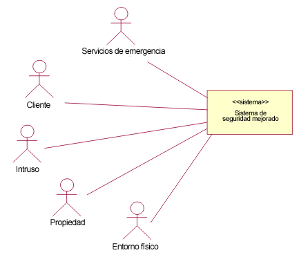
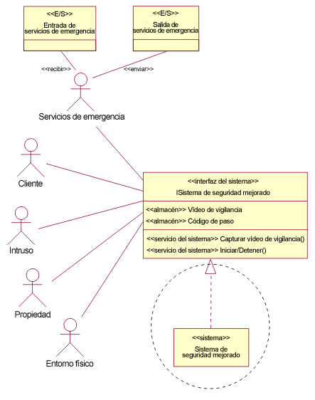
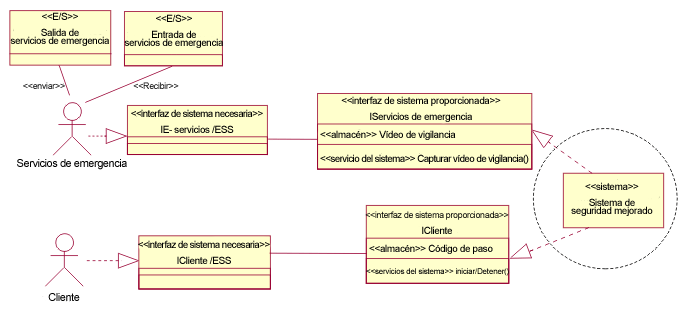

|
Introducción
Mientras que el modelo de caso de uso muestra el contexto de comportamiento del sistema, en esta tarea se crea un
modelo lógico del sistema en su propio entorno utilizando el Producto
de trabajo: modelo de caso de uso y el Producto de trabajo: Especificaciones suplementarias para delinear,
en un diagrama de contexto:
-
Las interfaces que el sistema debe realizar (en términos de las operaciones que el sistema
proporciona, y los protocolos asociados soportados, las variables de estado y almacenes que realiza
el sistema, y los atributos caracterizados como Medidas técnicas de rendimiento).
-
Las entidades de E/S que fluyen entre el sistema y sus actores.
-
Las interfaces que el sistema necesita (realizadas por los actores que interactuan con el sistema) para
obtener un rendimiento correcto. A menudo, si el actor representa un sistema existente con el que el sistema debe
comunicarse, estas interfaces necesarias simplemente reflejan las restricciones que impone este otro sistema.
Un diagrama de contexto muestra la colaboración de nivel superior entre el sistema y sus actores. Es el análogo
estructural del modelo de caso de uso del sistema. Esta colaboración se crea en el modelo de análisis.
Las entidades de E/S (representadas para el modelado como clases estereotipadas de "E/S" con atributos pero sin
operaciones) describen las cosas que entran o salen del sistema y, en el caso del sistema general, pueden incluir
datos, masa, energía o componentes físicos. Las entidades de E/S están asociadas (durante el modelado) con pares
actor-sistema, lo que indica que estas entidades concretas de E/S fluyen entre el actor y el sistema. Opcionalmente
puede mostrarse en los diagramas, asociadas con el actor, y la dirección del flujo se indica mediante un estereotipo
"enviar" o "recibir" en la asociación, indicando la dirección relativa al actor.
Un operación del sistema es un servicio que se puede solicitar a un objeto para afectar al comportamiento. Una
operación especifica el nombre, el tipo, los parámetros y las restricciones para invocar un comportamiento asociado.
Las operaciones se agrupan alrededor de interfaces junto con las principales responsabilidades del (sub)sistema bajo
consideración. Una invocación de operación del sistema representa una interacción más detallada con el sistema que una
instancia de caso de uso, ya que una instancia de caso de uso es una composición de invocaciones de operaciones y sus
respuestas.
Las variables de estado y los almacenes son atributos definidos en las interfaces que realiza el sistema. Estos
atributos son abstractos y requieren que el sistema mantenga información sobre el tipo y la multiplicidad del atributo
y permita el almacenamiento, recuperación y modificación de dicha información. No existe ninguna implicación que un
atributo del sistema se corresponda directamente con el atributo definido en la interfaz. La diferencia entre variables
de estado y almacenes no es intrínseca, sólo refleja la forma en que los atributos se utilizan para controlar la
operación de la máquina de estado (abstracta) del sistema. Un "estado" permanece durante un período de tiempo, a
diferencia de un suceso (como por ejemplo la llegada de una señal) que se produce en un momento dado. Las máquinas de
estado mencionadas aquí son máquinas de estado finitas y la delineación de "estado" normalmente la deciden
relativamente pocas variables; por ejemplo, el estado actual podría especificarse mediante el valor de un único
atributo de un tipo de enumeración. Sin embargo, la reacción del sistema a un suceso podría depender no sólo de la
naturaleza del suceso (y de la información que lleva, por ejemplo, en los parámetros de la operación) y del estado
actual, sino también del valor de otros (quizás muchos) atributos.
Una medida técnica de rendimiento (TPM) es un atributo técnico importante que se selecciona en las especificaciones
suplementarias o en el modelo de caso de uso como indicador crítico de la eficacia del sistema que, si no se consigue,
el desarrollo del sistema corre el riesgo de desbordar las restricciones de coste, planificación o rendimiento. Se
realiza el seguimiento de los valores emergentes de estos atributos durante el tiempo de vida del proyecto. Por
ejemplo, puede ser importante que el peso entregado de un sistema se mantenga por debajo de un determinado límite y la
consecución de este objetivo debe supervisarse a medida que se lleva a cabo el diseño y la construcción. El peso del
sistema cuando se entrega es evidentemente un atributo (que puede medirse de varias maneras) de una instancia del
sistema y no es necesariamente el mismo que el peso objetivo durante el desarrollo (para un sistema que debe lanzarse
en órbita probablemente desearía que fuese menor). Un valor etiquetado de UML puede utilizarse para anotar un atributo
TPM que indique el objetivo de rendimiento, por ejemplo:
Peso "TPM" {peso_máximo = 1000kg}
Las medidas técnicas de rendimiento también pueden aplicarse a otras características no estructurales, como por ejemplo
el tiempo de respuesta de una operación. Los valores etiquetados pueden aplicarse a las operaciones del sistema, o al
propio sistema, para su registro.
|
Crear el diagrama de contexto inicial
Los pasos siguientes muestran los niveles de detalle en evolución del sistema en su contexto. El ejemplo que se ilustra
a continuación es el de un sistema de seguridad para proteger una propiedad contra intrusos, que además de hacer sonar
una alarma, tiene la capacidad de notificar las infracciones a algún tipo de servicio de respuesta.
A medida que se evoluciona y se añade más detalle al modelo de caso de uso (descubriendo los actores; o si se ha
realizado el modelado empresarial, y actores y quizás operaciones ya identificadas, elaborando su interacción), puede
crear la colaboración inicial e ilustrarla con un diagrama de contexto. El diagrama de contexto puede crearse tal como
se muestra, inicialmente con las interfaces del sistema abstractas. El sistema se representa como un subsistema de
nivel superior ("sistema" estereotipado) que finalmente realiza varias interfaces. Los actores y sus asociaciones
también se muestran, una vez más, sin ningún detalle inicialmente.

Diagrama de contexto (inicial)
|
Perfeccionar asociaciones e interfaces
A continuación, perfeccione las asociaciones entre los actores y el sistema, y la interfaz del sistema. Puede empezar a
razonar sobre las operaciones del sistema y los atributos del sistema a medida que emergen de la Tarea: Buscar actores y casos de uso (más tarde: Tarea: Detallar un caso de uso). Observe que ahora el sistema aparece
ante los actores, mostrando la interfaz. La realización de esta interfaz puede mostrarse si lo desea (resaltada
mediante el círculo de guiones en el diagrama), pero puede omitirse sin que se pierda mucha información.
En esta fase, sólo identifique provisionalmente las entidades de E/S basándose en el conocimiento del dominio y en los
trabajos previos realizando casos de uso a nivel de empresa. Tenga en cuenta que no es necesario que las entidades
de E/S se muestren en el diagrama, pero esto puede ser útiles a la hora de razonar sobre las interacciones
actor-sistema.
Por tanto, puede empezar a caracterizar la conexión o conexiones entre el actor y el sistema (por ejemplo, registre el
protocolo necesario) y registre las entidades que fluyen entre ellos.

Diagrama de contexto (preliminar)
|
Detallar operaciones del sistema y otras características del sistema
En este paso, se empieza a construir casos de ejemplo de casos de uso (instancias de casos de uso) a partir de los
cuales se pueden describir las operaciones del sistema (proporcionadas y necesarias). Los casos de ejemplo pueden
ilustrarse mediante diagramas de interacción o de actividad. Cada paso de caja negra de un caso de uso representa una
interacción más detallada con el sistema y se correlaciona con una invocación de operación (pero no necesariamente una
operación exclusiva; otros pasos de caja negra podrían utilizar la misma operación). Además de definir las operaciones
del sistema en el diagrama de contexto (y por tanto en el modelo de análisis), los casos de uso también se anotan, para
la rastreabilidad, en las operaciones invocadas. Las operaciones también heredan requisitos de rendimiento u otros
requisitos no funcionales que se han asignado a los pasos de caja negra. Cuando examine cada paso de caja negra
realizado en el caso de ejemplo, descubrirá la utilización de nombres que podrían sugerir variables de estado y
almacenes que el sistema debe mantener para ejecutar el caso de ejemplo de caso de uso. También puede perfeccionar
las entidades de E/S necesarias y asociarlas con invocaciones de operaciones para formar las señales que se envían
entre el actor y el sistema.
Para una mejor comprensión, se podría dividir la interfaz del sistema en interfaces más específicas; de hecho, puede
haber requisitos de interfaz en la especificación suplementaria que lo aconsejen. La ilustración siguiente muestra la
evolución de la interfaz del sistema a una "interfaz del sistema proporcionada" para cada tipo de actor, aunque esto no
es una prescripción fija. Los actores podrían compartir una interfaz o podría haber más de una interfaz para un actor.
Este análisis también podría identificar interfaces necesarias del sistema, es decir, interfaces a las que los
actores deben dar soporte (para procesar mensajes del sistema). Estas interfaces pueden añadirse al diagrama de forma
simétrica (por ejemplo, vea la "interfaz del sistema necesaria" de los servicios IE/ESS realizada por el actor
Servicios de emergencia en el diagrama siguiente). Una vez más, (aunque no se muestra), un actor podría dar
soporte a (realizar) más de una interfaz
Las operaciones, almacenes, etc., deben añadirse a una forma ampliada de las interfaces (en los compartimentos de
atributo y operación) tal como se muestra. El diagrama sólo se ha elaborado parcialmente (por cuestiones de espacio).
La interfaz del entorno físico, el actor, etc. no se han ampliado. Una vez más, la realización de las interfaces del
sistema proporcionadas puede omitirse sin que se pierda mucha información.

Diagrama de contexto (final).
Esta colaboración de nivel superior, capturada en el diagrama de contexto, permite especificar de forma rigurosa las
interfaces, las conexiones, lo que entra y sale del sistema, y las características de rendimiento asociadas,
permitiendo que el desarrollo del sistema se lleve a cabo con una cierta independencia de otros elementos existentes en
el contexto del sistema.
|
|